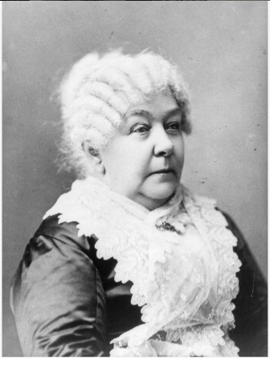

The women’s suffrage movement was a decades-long fight to win the right to vote for women in the United States. It took activists and reformers nearly 100 years to win that right, and the campaign was not easy: Disagreements over strategy threatened to cripple the movement more than once. But on August 18, 1920, the 19th Amendment to the Constitution was finally ratified, enfranchising all American women and declaring for the first time that they, like men, deserve all the rights and responsibilities of citizenship.
Elizabeth Cady Stanton was an abolitionist activist and an American writer who was a leader of the womans rights movement in the US during the 19th century.
Britannica - CC license
Home